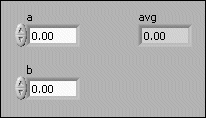
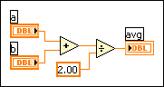
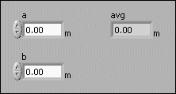
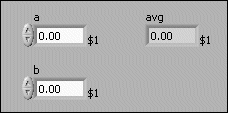
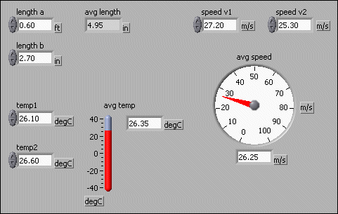
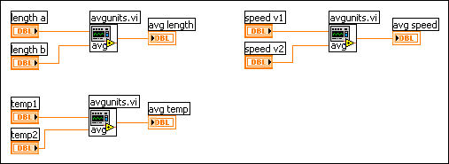
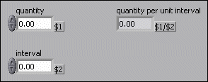
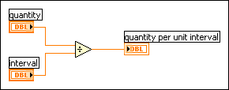
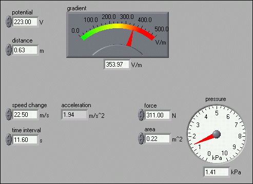
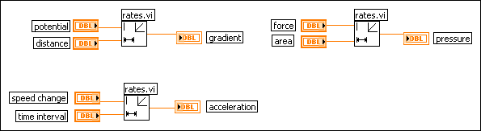

Use units to gain an additional level of consistency checking when you evaluate expressions and formulas, also known as dimensional analysis. With LabVIEW, you do not have to worry about conversions among systems of units because LabVIEW handles unit conversion when it displays data or when you enter data.
The LabVIEW built-in functions, such as Add and Multiply, are polymorphic with respect to units and automatically handle different units. However, to build a subVI with the same polymorphic unit capability, you must use polymorphic units.
You can use polymorphic units for one VI to do the same calculation regardless of the units the inputs receive. For example, if you want to create a VI that computes the root-mean-square value of a waveform, you must define the unit associated with the waveform. A separate VI is necessary for voltage waveforms, current waveforms, temperature waveforms, and so on. However, instead of rewriting the same VI for each case, you can write a single subVI with polymorphic units and call it from the VIs with specific units.
LabVIEW treats a polymorphic unit as a unique unit. The polymorphic unit cannot convert to any other unit and propagates throughout the block diagram just as other units do. When you wire a control with the polymorphic unit $1 to an indicator that also has the polymorphic unit $1, the units match, and the VI can compile.
You can use $1 in combinations like any other unit. For example, if you multiply a control by 3 seconds and wire it to an indicator, the indicator must be $1 s units. Wiring an indicator that has different units from the control results in a broken wire.
A call to a subVI that contains polymorphic units computes output units based on the units its inputs receive. For example, suppose you create a subVI that has two inputs with the polymorphic units $1 and $2 that creates an output in the form $1$2/s. If you wire the subVI with inputs of m/s to the $1 input and kg to the $2 input, LabVIEW computes the output unit as kg m/s^2.
Suppose a different VI has two inputs of $1 and $1/s and computes an output of $1^2. If you wire this VI with inputs of m/s to the $1 input and m/s^2 to the $1/s input, LabVIEW computes the output unit as m^2/s^2. However, if you wire this VI with inputs of m to the $1 input and kg to the $1/s input, the subVI call is broken. LabVIEW declares one of the inputs as a unit conflict and computes (if possible) the output from the other unit. A VI with polymorphic units can have a subVI with polymorphic units because LabVIEW keeps the respective units distinct.
This section presents several examples of VIs with and without polymorphic units. It begins with a simple averaging example without any units. It then provides an example with a base unit. Next it turns this example into one with polymorphic units and uses it as a subVI for another example. The Multiple Averages example and the Multiple Rates example demonstrate when you might want to use a subVI with polymorphic unit capability.
The following front panel belongs to a VI that computes the average of two numbers. Notice that there are no units on the controls or indicator.

The following block diagram belongs to the VI.

The following front panel belongs to a VI that computes the average of two numbers, each with a unit of meters.

The block diagram for this VI is identical to the previous block diagram. The units appear only on the front panel. If one control or indicator on the front panel has a unit, all controls and indicators on the front panel must have a unit or the block diagram displays broken wires, and the VI will not run.
The following front panel belongs to a VI that computes the average of two numbers. Unlike the previous front panel, the following front panel has a polymorphic unit. The Multiple Averages example uses this VI as a subVI.

The block diagram for this VI is identical to the previous block diagram. As with the Averaging with Meters example, the polymorphic units appear only on the front panel. If one control or indicator on the front panel has a unit, all controls and indicators on the front panel must have a unit or the block diagram displays broken wires, and the VI will not run.
The following front panel belongs to a VI that calculates three different averages, each with different units, which is an example of when to use a subVI with polymorphic units.

Notice that length a has a unit of feet, length b has a unit of inches, and avg length has a unit of inches. LabVIEW automatically handles the conversion from feet to inches for you because this VI uses polymorphic units.
The following block diagram uses the Averaging with Polymorphic Units VI to average each example shown in the Multiple Averages example.

Notice that you can use the Averaging with Polymorphic Units subVI with all the units shown in the Multiple Averages VI. Instead of creating a separate VI each time you want to average two numbers with units, you can use a subVI with polymorphic units.
You also can use polymorphic units when an indicator unit is a combination of the input units, such as calculating rates. The following front panel belongs to a VI that calculates a quantity per interval. You usually do not create such simple subVIs. This is just an example to illustrate two polymorphic units on a subVI. The Multiple Rates example uses this VI as a subVI.

Notice that the quantity unit is $1 and the interval unit is $2. You can use any number, 1 through 9, for a polymorphic unit.
The following block diagram belongs to the VI.

The following front panel belongs to a VI that calculates three different rates � gradient, acceleration, and pressure.

Notice that two of the units on the controls are compound units. The previous Rates with Polymorphic Units subVI accepts both simple and compound units.
The following block diagram belongs to the VI.

The block diagrams in Multiple Averages and Multiple Rates are almost the same. Each performs three different calculations using one subVI with polymorphic units.